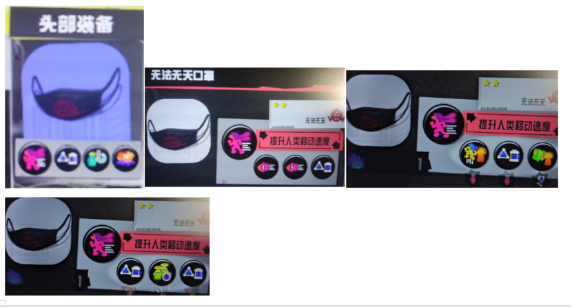
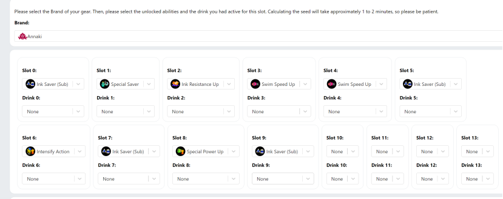
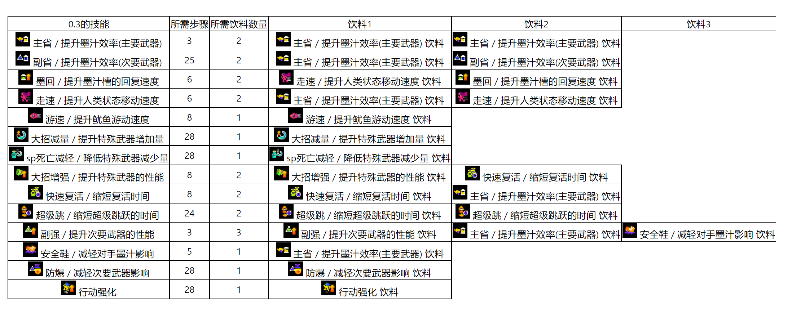
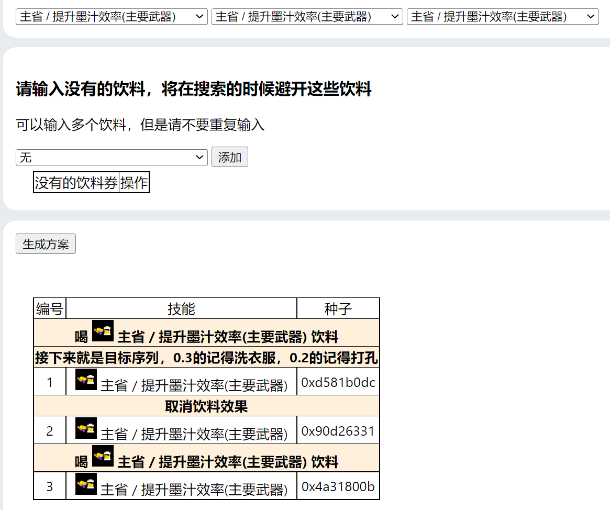
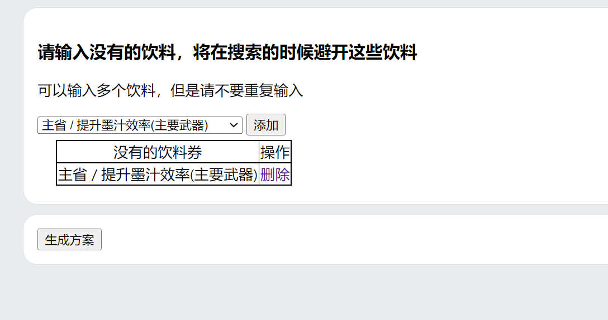
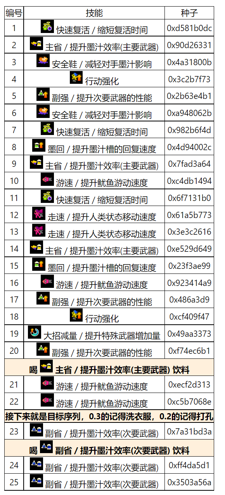
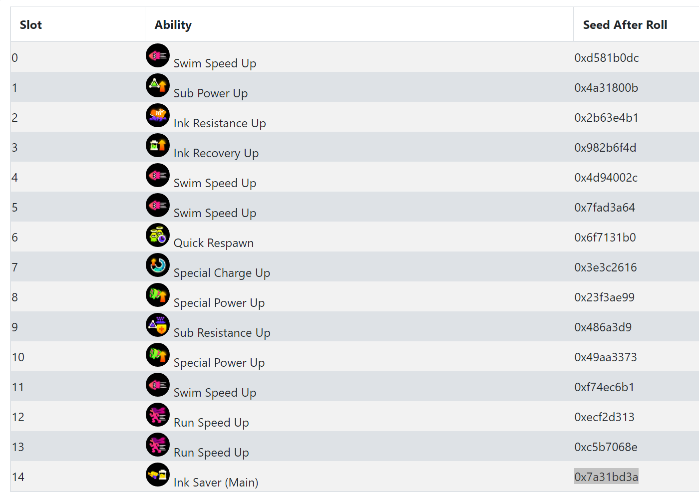
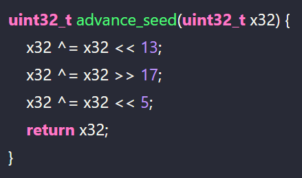

首先感谢lean大佬的解包和国内各位大佬的搬运讲解，也感谢各位使用者对我的夸赞与认可，也感谢各位大佬的建议与反馈的bug，但是我的水平实在有限，有的功能没做，我的程序只是在各位大佬的基础上，为刷装备提供了一点点小小的便利，该有的肝度还是少不了，除非用超级蝾螈氪
lean大佬的GitHub在这里，里面有很多的解包数据的展示，包括全装备、全贴纸、全徽章以及获得条件都有，而且他的GitHub里面也有这些东西的图片
我其实没有学过前端，这个小网站非常的简陋，一旦学过的人看到我的源码估计会笑出来，包括这些格式什么的其实有的是从lean大佬的网站上粘过来的
可惜lean的网站是用软件搭的，没有看到他的源码，要不然还可以把他的网站汉化一下，等之后有大量空余时间了再做这些事
以后也会把更新介绍写在这里
A:不会，搜索0.2的目的就在于在0.2出来之前用十个碎片打技能
A:不会，几个技能都能洗衣服，平时衣服都是两万洗一次，祭典衣服是两千洗一次，所以可以在祭典的时候刷碎片，出一个技能洗一次
A:如果目标序列的第一个位置是通过喝饮料产生的，那么就去lean的网站上查找喝饮料的情况下目标序列第一个种子的位置，在这个种子的技能产生之前换成方案需要的饮料就行，后面继续按照我的方案来
如果目标序列第一个位置不是喝饮料产生的，那么还是去lean的网站上查找喝饮料的情况下，如果能在序列中找到这个种子，那就在这个种子技能产生之前取消饮料效果，如果找不到这个种子，那就在这个种子的前一个种子那里取消饮料效果
反正只要确保目标方案的三个种子不会丢失即可，而且喝饮料也只能减少个35%左右的序列，看大家需求，如果大家觉得这个功能很重要可以告诉我，我之后努努力把这个功能在网站上加上
此功能已增加，增加了自定义一种饮料来跳过目标序列之前的功能
A:并不是，空技能槽也可以打技能，并且不会影响序列，所以刷出0.2想变成0.3既可以把目标序列前一个技能替换成想要的技能，也可以在刷出目标序列之前洗衣服，然后花十碎片在空技能上放技能
增加了自定义饮料来跳过目标序列之前序列的功能
可以参考一下b站的这个视频by 渴望有存在感的喵喵
ps.如果大家有人做了全部流程的视频可以和我说一下，我把链接放在网站上，因为我在学校不方便做视频就没做
装备种子是一个4比特的数，也就是32位二进制的数，当我们获得一件装备的时候，游戏会给这件装备生成这样的一个数，每当这件装备生成技能的时候就会把这个数按照一定规则变一下，并生成技能，这个规则我放在最后，有兴趣可以看一下
也就是说，当我们知道这件装备的种子的时候，这件装备之后生成的技能，和以前生成的技能都能被得知，而我的程序就是在这些未来的可能中寻找你想要的序列
装备种子决定了技能的生成顺序，我们也可以利用技能的生成顺序来确定装备的种子，这个算法我没有研究，有兴趣的自行翻看lean大佬的GitHub，好像是用汇编写的
比如我的这件无法无天装备，这是连续12个生成的技能
将这些技能放入lean大佬的计算种子的网站中
slot部分填的就是技能，从序号0开始，对应的drink填的是生成该技能时的饮料
刷技能序列确定种子的时候可以喝饮料，但是一定要记住每个技能生成的时候喝了什么饮料，只有在生成的时候饮料才起效，前面那些经验喝饮料没有关系
这个过程比较漫长，如果你的超级蝾螈比较多，也可以直接用超级蝾螈刷技能
一般来说，9到12个技能就可以确定种子，如果显示没有确定种子，那可能就是你的技能序列出问题了，检查一下每个技能喝什么饮料是否对应，是否有服装满技能之后技能掉落的情况等等
并且lean大佬的网站具有向前搜索技能与种子的功能，需要在start slot里面填数字然后你自己在数字前面加 减号 ，这样的作用是你可以少刷几个技能，之后观星三个，如果在观星之后确定了种子，也可以在网站上找到这件装备此时的种子
运气好的话，一件装备只需要刷满两次＋观星一次就可以确定种子，所以在刷到6、7个种子之后就尝试观星，寻找能不能确定种子
ps.如果你输入几个技能无法确定种子之后，再次输入一个技能，可以按网站的refin seed按钮，这个按钮的作用就是只在下面那些种子里面搜索，搜索速度会很快
之后把你当前 最新 产生的技能对应的种子输入我的网站中
比如我的网站自带的一个例子0x915cfc31，这是一件amiibo装备的种子
在你没有想要的序列的时候，可以放着三个未知，点击生成方案，会生成距离所有技能的0.3、0.2的距离
ps.0.2的技能想要变成0.3可以在0.2出现之前花十个碎片打孔，这样序列是不变的，剩下两个空孔还是是0.2的技能
所需步骤指的是从一开始到目标技能结束需要刷多少个技能，比如主省只需要3步，也就是马上就可以刷出来0.3的主省，如下图
如果有一些饮料你没有，你可以使用饮料黑名单功能，添加你没有的饮料，这样搜索出来的方案都是不使用这些饮料的方案，比如这件装备你没有主省饮料，还想要0.3的主省
发现直接没有了方案，这就说明在三十步以内，不喝饮料刷不出0.3的主省
还有就是，比如生成副省的路线非常远有25步
其实目标序列之前的那些序列可以用喝饮料的方式跳过一部分，差不多能缩短35%的长度，只需要在目标序列那三个和我的方案一样就行，前面的你想怎么喝饮料都行
比如说我这件装备，假如从一开始就喝游速饮料，产生的结果如下
我们发现，在编号14，也就是第15步，出现了我的方案目标序列的第一个技能的种子，那我在这个种子技能产生之前改喝主省饮料就可以把这个种子的技能变成主省
之后的部分按照我的方案就行，这样就只需要17步，减少了8步，就是靠喝饮料减少的
教程暂时写到这里，之后还有问题可以问我，我再完善教程
每件装备到你手上的时候会有一个种子，这个种子就是一个4字节的二进制数。
还有一个算法比较重要是种子改变的算法，这个算法是固定的，是 XORSHIFT32，算法如下
当没有喝饮料的时候，并且衣服没有品牌倾向的时候，比如amiibo和熊老板、鱼干制造的衣服，一共有14种技能，每种技能的权重是2，所以14种技能的权重和是28，用当前的种子除以权重和28得到余数，用这个余数按照顺序减去技能的权重，技能的顺序是一样的，用这个余数－2－2，直到减到0，停下来的地方就是这个种子表现出来的技能。
如果是有品牌倾向的情况下，那么强倾向技能的权重就是10，弱倾向的权重是1，剩下12个技能的权重还是2，那么权重和就是12×2＋1＋10＝35，因此，在不喝饮料的情况下，用种子除以权重和35得到余数，再将余数按顺序减去技能的时候权重，减到0，对应的技能就是表现的技能
如果有饮料的情况下，先用种子直接除100，得到的余数跟30比，如果小于三十，那么直接表现出饮料的技能，如果大于三十，先把种子变换一下，然后减去出去饮料对应的技能剩下的技能的权重和，如果是中性衣服，这个数就是28－2＝26，如果是品牌倾向衣服，如果饮料是强倾向技能，那么就是35－10＝25，如果是弱倾向，那就是35－1＝34，如果是普通技能就是35－2＝33。用种子除以权重和之后，还是按照顺序减技能的选中，到0停止，停下来的技能就是表现的技能。
我的思路就是简单的穷举法，为什么我的饮料券是三个呢，因为最开始我没有设置这个，我的代码最开始思路是这样的，反正饮料券并不会把种子扭曲，之后跳过某些种子，因此一开始我就直接求出在所有饮料情况和不喝饮料，一共十四种情况的饮料序列，每个序列从一开始的种子向后算20个，这样就一共有20×14=280个种子，从这280个种子中，从序列号的由小到大找目标序列的第一个技能，如果第一个技能匹配上，再找这个种子之后不喝饮料和喝13种饮料的十四种情况中是否有目标序列第二个，如果有，继续找第三个是否匹配，如果没有就继续寻找。
这样有个问题就是第一瓶饮料是从一开始就喝的开始算的，这样饮料的持续时间太久了，所以我改变了方案。
就是先算原始不喝饮料的序列，一个种子一个种子的算，每算到一个种子的时候计算接下来三个不喝饮料和喝14种饮料的序列，开始散开十四个分支，在分支中寻找目标序列第一个
如果匹配上就在这里找接下来两个是否匹配上